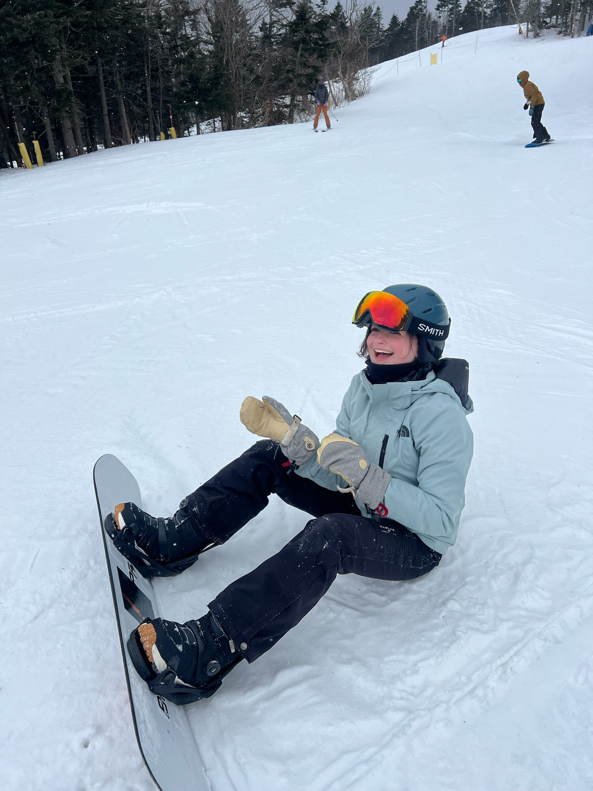

All About Me!
Hi! My name's Maddy, and I'm a 2nd year at Northeastern!
click here to see the things i like!

Joining college was both an exciting and overwhelming experience
for me. As a finance and computer science major, I wanted to immerse
myself in both the academic and social aspects of college life.
Early on, I wanted to find STEM-related clubs to connect with
people of similar interests. I joined various organizations
focused on computer science, finance, and technology, which helped
me build technical skills, collaborate on projects, and attend
networking events. These clubs not only provided valuable learning
experiences but also introduced me to mentors and peers who have
guided me along the way. At the same time, I wanted a well-rounded
college experience, so I decided to join a sorority. Becoming part
of Greek life gave me a sense of community, leadership opportunities,
and lifelong friendships. As the secretary of my sorority, I have
taken on the responsibility of organizing executive board meetings,
which has strengthened my communication and organizational skills.
Balancing my involvement in STEM clubs and my sorority has allowed
me to grow academically, socially, and professionally. Through
these experiences, I have gained confidence, built lasting
relationships, and developed a strong sense of belonging in my college
journey.
email: tanlsley.m@northeastern.edu | instagram: @maddy.tansley